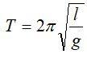

Колебания — движения или процессы, обладающие той или иной степенью повторяемости во времени.
Колебания называются периодическими, если значения физических величин, изменяющихся в процессе колебания, повторяются через равные промежутки времени.
В зависимости от физической природы колебательного процесса и «механизма» его возбуждения различают механические и электромагнитные колебания.
Наиболее важными величинами, характеризующими колебания, являются:
Амплитуда колебаний Xm - максимальное значение колеблющейся величины х. В случае механических колебаний амплитуда — модуль максимального смещения
Период T- наименьший промежуток времени, через который система, совершающая колебания, снова возвращается в то же состояние, в котором она находилась в начальный момент, выбранный произвольно. По истечении этого времени значения физических величин, характеризующих колебательный процесс, повторяются. За период Т система совершает одно полное колебание
Частота ν - величина, равная числу колебаний, совершаемых в единицу времени. За единицу частоты в СИ принята частота периодического процесса, при которой за время t (с) происходит один цикл процесса. Обозначается ν и измеряется в СИ в Гц (Герц).
Частота ν и период колебаний T связаны соотношением:
Циклическая(угловая) частота ω - характеристика гармонических колебаний, равная числу полных колебаний, совершающихся за 2π единиц времени. За единицу циклической частоты в СИ принята угловая частота ω, при которой за время совершается 2π циклов колебаний. Обозначается ω и измеряется в СИ в 1/с или с-1.
Циклическая частота ω связана с периодом T и частотой гармонических колебаний:
Фаза φ0 - периодически изменяющийся аргумент функции, описывающей колебательный или волновой процесс. Фаза характеризует состояние этого процесса в данный момент времени. Обозначается φ0 и измеряется в СИ в радианах.
Смещение x - величина, характеризующая колебания, равная отклонению тела от положения равновесия в данный момент времени.
Простейший вид периодических колебаний — гармонические колебания
Гармонические колебания — периодическое изменение во времени физической (или другой) величины, происходящее по закону синуса или косинуса: х = Хm cos (ω t + φ0) , где х — значение колеблющейся величины в данный момент времени Хm — амплитуда колебаний, ω — циклическая частота колебаний, (ω t + φ0 )— фаза колебаний, φ0 — начальная фаза.
Гармонические механические колебания происходят под действием силы.Ϝ пропорциональной смещению х и направленной к положению равновесия: Ϝx= -кx , где к — постоянный коэффициент. Такая зависимость силы от смещения характерна для упругой силы. Поэтому силы иной физической природы, удовлетворяющие тому же виду зависимости, называются квазиупругими силами.
Колебания предоставленной самой себе системы, вызванные первоначальным кратковременным внешним возбуждением (сообщением начального запаса энергии), называются свободными или собственными.
Колебательная система – система, способная совершать свободные колебания.
Колебательная система должна удовлетворять следующим условиям:
-должно существовать положение устойчивого равновесия;
-должен существовать фактор, не позволяющий системе остановиться в положении равновесия в процессе колебаний (в механике инертность системы);
- трение в системе должно быть мало
Собственная частота колебательной системы определяется только параметрами системы.
В механике примерами колебательных систем могут служить:
Пружинный маятник — колебательная система, состоящая из груза массой m, подвешенного к абсолютно упругой пружине. коэффициент жесткости которой к. Пружинный маятник совершает гармонические колебания с циклической частотой и периодом
Математический маятник — идеализированная физическая модель колебательной системы маятника. Представляет собой материальную точку, подвешенную на тонкой невесомой и нерастяжимой нити, закрепленной в неподвижной точке. В эту колебательную систему также входит Земля (или тело, создающее гравитационное поле).
Математический маятник — идеализированная физическая модель колебательной системы маятника. Представляет собой материальную точку, подвешенную на тонкой невесомой и нерастяжимой нити, закрепленной в неподвижной точке. В эту колебательную систему также входит Земля (или тело, создающее гравитационное поле).
Если математический маятник отклонить от положения равновесия и отпустить, не сообщая ему начальной скорости, то маятник будет совершать колебания в вертикальной плоскости. В случае малых отклонений (до — 4º) математический маятник совершает гармонические колебания, период которых не зависит от амплитуды и выражается следующим образом: , где l – длина нити, g – ускорение свободного падения.
Циклическая частота малых колебаний математического маятника равна:
Свободные колебания реальных колебательных систем всегда являются затухающими.
Затухающие колебания — собственные колебания, амплитуда которых уменьшается со временем. Уменьшение амплитуды обусловлено потерями энергии колебательной системой.
В случае механических колебаний механическая энергия убывает за счет действия сил трения и других сил сопротивления. Быстрота убывания амплитуды характеризуется коэффициентом затухания и логарифмическим декрементом затухания λ. Коэффициент затухания для механических колебаний зависит от сил трения и массы колеблющегося тела. В любой колебательной системе затухание нарушает периодичность колебаний и к ним не применимы понятия периода и частоты, но, если затухание мало, то можно пользоваться понятием периода и считать период затухающих колебаний равным периоду гармонических колебаний в этой колебательной системе.
Декремент затухания — количественная характеристика быстроты затухания колебаний, Декремент затухания равен натуральному логарифму отношения двух последовательных максимальных отклонений Хm1, и Хm2: колеблющейся величины в одну сторону.
Декремент затухания — величина, обратная числу колебаний, по истечении которых амплитуда убывает в е раз (е=2,71828...).
Для получения незатухающих колебаний на колебательную систему должна действовать периодически изменяющаяся внешняя сила. В этом случае колебания системы называются вынужденными.
Вынужденные колебания — колебания. возникающие под действием внешней периодической силы, называемой вынуждающей силой.
- Вынужденные колебания могут совершать любые тела (не обязательно колебательные системы). - Характер вынужденных колебаний определяется свойствами внешнего воздействия и самой системы, совершающей колебания.
- Частота и период вынужденных колебаний равны частоте и периоду вынуждающей силы.
- Амплитуда вынужденных колебаний зависит от амплитуды действующей силы и затухания в системе.
Если вынужденные колебания совершает колебательная система и затухание в системе мало, то амплитуда сильно зависит от соотношения между частотой вынуждающей силы и частотой собственных колебаний системы. При приближении частоты внешней силы к собственной частоте системы амплитуда вынужденных колебаний резко возрастает. Это явление называется резонансом.
Резонанс — явление резкого возрастания амплитуды вынужденных колебаний при приближении циклической частоты ω вынуждающей силы к собственной циклической частоте ω0 колебательной системы.
Амплитуда колебаний при резонансе зависит от степени затухания колебаний и определяется параметрами колебательной системы, влияющими на затухание, — коэффициентом трения при механических колебаниях. На рисунке изображены графики зависимости амплитуды вынужденных колебаний от циклической частоты вынуждающей силы для колебательных систем с различным затуханием. Если затухание отсутствует, то амплитуда при резонансе увеличивается до бесконечности (кривая 1). При увеличении затухания резонансная амплитуда имеет конечное значение, причем при большем затухании резонансный максимум становится менее резким. (кривая 2) соответствует резонансу в системе с меньшим затуханием, чем в системе, которой соответствует кривая З
Резонанс играет большую роль в технике и в повседневной жизни. Резонанс сооружений и машин при периодических внешних воздействиях может привести к разрушениям и катастрофам. Чтобы избежать резонансных воздействий, подбирают соответствующим образом свойства системы или используют успокоители колебаний. В радиотехнике благодаря резонансу осуществляют настройку приемных устройств на частоту принимаемых волн.
Если система сама управляет воздействием внешних сил, то возникающее в ней колебательное движение называют автоколебаниями.
Автоколебания — незатухающие колебания физической системы, существующие без воздействия на неё внешних сил.
Автоколебания поддерживаются источником энергии, находящимся в самой системе. Амплитуда и период автоколебаний определяются параметрами автоколебательной системы.
Примеры автоколебаний: колебания маятника часов, электрические колебания в ламповом генераторе.
Автоколебательная система — физическая система, в которой могут существовать автоколебания.
В автоколебательной системе выделяются следующие части:
< >колебательная система, параметры которой определяют частоту автоколебаний;источник энергии, поддерживающий колебания в системе;З) клапан, регулирующий поступление энергии в колебательную систему;
4) положительная обратная связь, посредством которой колебательная система управляет клапаном так, чтобы энергия, поступающая в систему за период, компенсировала потери энергии на преодоление трения и сопротивления среды за то же время.
Обратная связь - воздействие результатов какого-либо процесса на его протекание.
Если отклонение какой-либо характеристики процесса в некоторый момент времени приводит благодаря обратной связи к дальнейшему росту этого отклонения, то обратная связь называется положительной, если к уменьшению — то отрицательной.
Амплитуда автоколебаний определяется параметрами колебательной системы и энергией, поступающей в систему за период.
МЕХАНИЧЕСКИЕ ВОЛНЫ
Волны — возмущения (изменения состояния вещества или поля), распространяющиеся в пространстве с конечной скоростью.
Распространение волн связано с переносом энергии без переноса вещества.
Наиболее важные и часто встречающиеся виды волн: упругие (механические) волны (в том числе звук, ультразвук), волны на поверхности жидкости, электромагнитные волны (в том числе радиоволны, свет, рентгеновское излучение и т. д.).
При распространении волн возможны явления отражения, преломления, дисперсии, дифракции, интерференции, поглощения и рассеяния (эти явления рассмотрены на примере электромагнитных волн).
По ориентации возмущения относительно направления распространения волны делятся на продольные и поперечные.
Поперечная волна — волна, в которой возмущения (изменения состояния вещества или поля) ориентированы перпендикулярно направлению её распространения.
Продольная волна — волна, в которой возмущения (изменения состояния вещества) ориентированы вдоль направления её распространения.
Луч — направление, в котором волной переносится энергия. Луч перпендикулярен фронту волны.
Представление о распространении волн как о распространении лучей используется, например, в геометрической оптике.
Фронт волны — поверхность, которая отделяет точки среды, до которых дошло возмущение, от тех точек, до которых возмущение ещё не дошло.
Распространение волны происходит в направлении нормали к волновому фронту и может рассматриваться как движение волнового фронта.
В однородной изотропной среде фронт волны от плоского источника колебаний представляет собой плоскость, а фронт волны от точечного источника — сферу.
Волновая поверхность — геометрическое место точек, в которых фаза колебаний имеет одинаковое значение.
Через каждую точку среды, охваченной волновым движением, можно провести одну волновую поверхность, соответствующую значению фазы колебаний в этой точке в данный момент времени.
В однородной изотропной среде излучение точечного источника имеет сферические волновые поверхности.
Длина волны λ — величина, равная расстоянию между точками, фазы колебаний в которых отличаются на 2π, или расстояние, на которое распространяется волна за время, равное периоду колебания точки среды. Единица длины волны в СИ – метр (λ=м)
|
7, |
Длина волны связана с периодом колебаний Т и скоростью распространения волны:
λ=υ Т, где υ – скорость распространения волны.
Упругие волны (механические волны) — механические возмущения, распространяющиеся в упругих средах.
При прохождении упругих волн в среде возникают механические деформации сжатия (при распространении продольных волн) и сдвига (при распространении поперечных волн), которые переносятся волной из одной точки среды в другую. При этом имеет место перенос энергии, а переноса вещества не происходит.
В твёрдых телах могут распространяться и продольные и поперечные упругие волны, а в жидкостях и газах — только продольные.
Примерами упругих волн являются волны в жидкостях, звуковые волны, ультразвук, волны, возникающие в земной коре при землетрясениях.
ЗВУКОВЫЕ ВОЛНЫ
Звуковые волны (звук) — упругие волны с частотами от 16 до 20000 Гц, воспринимаемые органами слуха человека.
Наиболее распространенными источниками звука являются колеблющиеся тела, частоты колебаний которых лежат в вышеуказанном интервале. Например, струна, камертон, столб воздуха в трубке, мембрана, голосовые связки человека. Источниками звука в газах или жидкостях могут быть не только вибрирующие тела. Так, например, полёт стрелы в воздухе сопровождается свистом, бурное течение воды — шумом.
Различают следующие звуки:
< >простой тон, представляющий собой гармоническое колебание;сложный тон, представляющий собой результат сложения нескольких простых тонов; шум, являющийся нерегулярным колебанием; звуковой удар — кратковременное сильное звуковое воздействие на органы слуха человека.Скорость звука - скорость распространения в среде упругой волны.
звуковой удар — кратковременное сильное звуковое воздействие на органы слуха человека.Скорость звука - скорость распространения в среде упругой волны.
Скорость звука в различных веществах имеет разные значения (см., например, таблицу). В воздухе при нормальных условиях звук распространяется со скоростью 331 м/с. В жидкостях и твердых телах скорость звука больше из-за их малой сжимаемости.
Скорость звука зависит от температуры среды, однако эта зависимость существенна только для газов. Например, в воздухе при повышении температуры на 1ºC скорость возрастает примерно на 0,6 м/с. Так, при температуре воздуха 20ºС скорость распространения звука равна 343 м/с.
|
Вещество |
Скорость звука м/с |
|
Воздух Вода Древесина Стекло |
331 1440 4000 4500 |
ФИЗИЧЕСКИЕ ХАРАКТЕРИСТИКИ ЗВУКА
1. Интенсивность звука I
Единица интенсивности в СИ —
За единицу интенсивности в СИ принята интенсивность волны, при которой за секунду волна переносит энергию 1 Дж через поверхность 1 м2 перпендикулярно этой поверхности.
Интенсивность пропорциональна квадрату частоты волны: Ι = ω2
Минимальная интенсивность звука Ι0, воспринимаемая человеческим ухом, называется порогом слышимости. При частоте 1 кГц Ι0 = 10-12 Вт/м 2.
Интенсивность звука Ιб, при которой возникают болевые ощущения, называется порогом болевого ощущения. При частоте 1 кГц Iб= 10 Вт/м 2.
2.Уровень интенсивности L Используется для сравнения интенсивностей звука: L = к 1g(I/Io),
где I — интенсивность данного звука, I0 — порог слышимости, к — коэффициент пропорциональности. При к = 10 уровень интенсивности выражают в децибелах.
Децибел равен уровню интенсивности звука, для которого выполняется соотношение: 10 lg(I/Io) = 1, где I0 — порог слышимости.
3. Скорость звука (см. выше)
4. Звуковое давление — дополнительное давление, возникающее в среде, в которой распространяется звуковая волна.
5.Спектр звука — набор частот с указанием их относительной интенсивности (амплитуды). Наименьшая частота соответствует основному тону, остальные обертонам. Сложный тон имеет линейчатый спектр, шум — сплошной спектр.
ПСИХОФИЗИОЛОГИЧЕСКИЕ (СУБЪЕКТИВНЫЕ) ХАРАКТЕРИСТИКИ ЗВУКА,
ОПРЕДЕЛЯЕМЫЕ ПО ВОСПРИЯТИЮ ЗВУКА ЧЕЛОВЕКОМ
Закон Вебера-Фехнера: наши ощущения пропорциональны логарифму раздражения.
Этот закон справедлив для всех наших органов чувств, в том числе для слуха и зрения.
Громкость звука зависит от интенсивности и частоты звука. При неизменной частоте колебаний громкость звука растет с увеличением интенсивности. При одинаковой интенсивности громкость звука (для простых тонов) различной частоты различна, т. е. на разных частотах одинаковую громкость могут иметь звуки с разной интенсивностью звуковой волны..
Громкость звука данной частоты количественно оценивают уровнем громкости Е.
Уровень громкости — величина, определяемая по формуле Е = к lg(I/Io), где к— коэффициент пропорциональности, зависящий от частоты и интенсивности звука, I— интенсивность данного звука , I0- порог слышимости.
Единица уровня громкости в СИ — фон и численно равна уровню звукового давления в 1 дБ, создаваемого синусоидальным тоном частотой 1 кГц такой же громкости, как и измеряемый звук (равногромким данному звуку).
Уровень громкости данного звука в фонах равен уровню интенсивности в децибелах для простого тона частотой 1000 Гц.
Любое сложное колебание можно представить как сумму различных гармонических колебаний с кратными частотами. В этом случае составляющее гармоническое колебание с наименьшей частотой называют основным тоном, а все другие — обертонами. Частоту основного тона такого сложного звука мы воспринимаем как высоту звука. Высота звука зависит также от амплитуды звуковой волны: звук с большей амплитудой имеет меньшую высоту, чем звук той же частоты, но с меньшей амплитудой. Число обертонов, их частоты и амплитуды, а также характер нарастания звука определяют тембр звука.
Для музыкальных целей более важна не абсолютная, а относительная высота звука. При построении мелодии, а также для сочетания звуков (в гармонии звуков) пользуются преимущественно такими интервалами частот, при которых отношения частот звуков равны 1 : 2,; 2 : З; З : 4; 4 . 5; 5 : 6; и т. д. Эти наиболее приятные для уха созвучия получили название консонансов. Менее приятные (менее благозвучные) интервалы называют диссонансами.